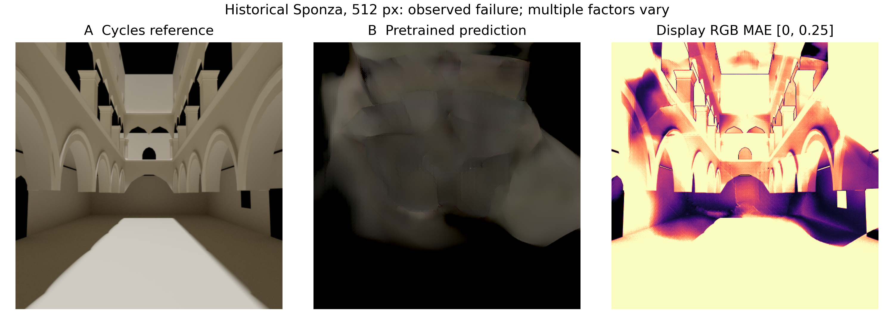
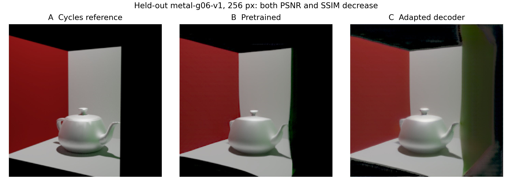
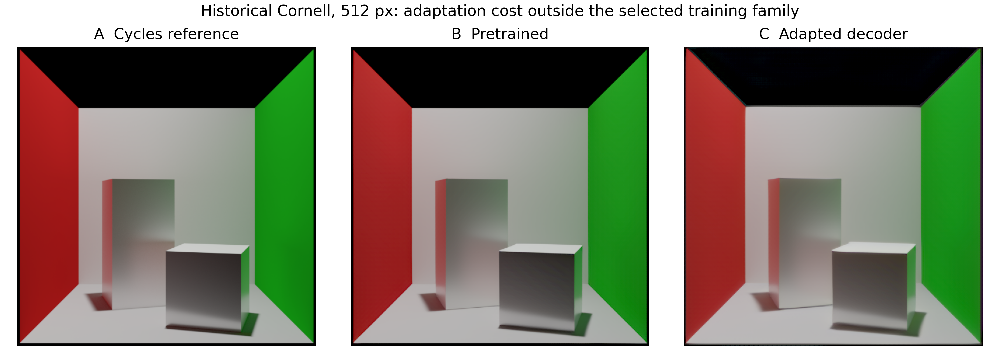
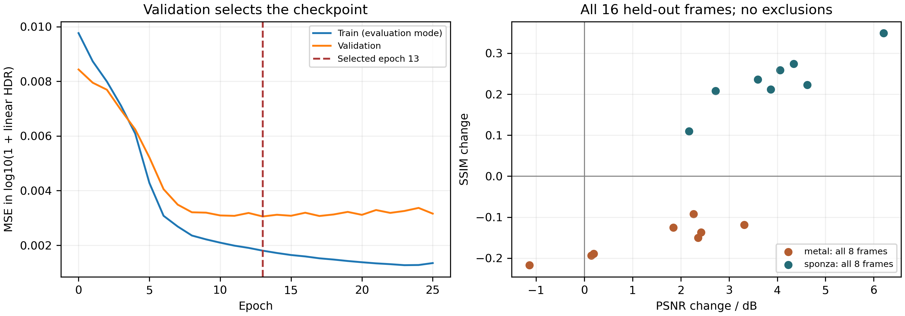

MEASURED LIMITS / 可核查的失败与退步
误差在哪里，
就把实验做到哪里。
把原论文的能力边界，与本项目真正测到的失败分开记录。改善与退步使用同一参考、显示处理和指标定义。
本页图像与训练结论来自仓库中已发布的历史 RTX 4060 Laptop 实验；不是新服务器的 Bunny／Sponza 训练结果。服务器新一轮未同步，不报告其收敛或效果。
8 / 8金属留出帧 SSIM 下降
7 / 8历史回归配置 PSNR 下降
16 帧散点图保留全部留出测试
原论文指出了什么
依据论文第8—9页及图10—15。下表中的“配置已准备”仅表示可生成实验输入，并不表示已运行。相关实测也不等同于单因素因果验证。打开论文原文 ↗
| 条件 | 论文位置 | 本项目状态 | 证据与边界 |
|---|---|---|---|
| 场景内相机 | 图13 / 第9页 | 已有相关实测 | Sponza 内外视角已有 A/B；场景复杂度等也变化，不能将全部误差归因于相机。 |
| 场景内光源与超大光源 | 图11 / 第8页 | 配置已准备，未运行 | 提供独立改变光源位置或面积的配置；尚无对应新测量。 |
| 超过8个光源 | 图10 / 第8页 | 配置已准备，未运行 | 9光源直接预测，与9次单光源线性HDR相加对比；不能相加PNG。 |
| 三角形数量与大三角形 | 图9、12 / 第7—8页 | 已有相关实测 | 已测 Sponza 建筑骨架；没有把三角形数与相机等变量独立控制。 |
| 分辨率依赖、复杂阴影 | 图13、14 / 第9页 | 待独立实验 | 已有跨分辨率历史数据不构成同场景分辨率消融；需要固定场景重新测量。 |
| 高阶镜面反射 | 图15 / 第9—10页 | 待独立实验 | 原论文观察到更高阶反射丢失；现有茶壶不能替代多次反射的受控测试。 |
| 微调后的结构与泛化退步 | 本项目扩展 | 已有实测 | 金属8/8帧SSIM下降；历史512像素回归7/8例PSNR下降。 |
真实失败与训练代价
Sponza 原始内部视角的显示 PSNR 为 7.7802 dB、SSIM 为 0.3203。这个例子同时含相机位置、场景复杂度和资产差异，保留错误但不独断原因。
留出金属配置 metal-g06-v1 的 PSNR：21.2030 → 20.0632 dB；SSIM：0.8505 → 0.6333。历史 Cornell 回归 PSNR：33.6511 → 23.8059 dB。两组分辨率不同，不合并平均。




示例按诊断目的事后选取；它们不是新增测试集。全部16帧的平均 log HDR MSE 虽下降65.84%，仍不能抵消金属结构指标退步。固定误差色标为 [0,0.25]；显示图不单独提亮预测。完整逐帧数据见 训练记录、历史回归。
用于报告与复现的最小文件
四张300 dpi实测图、逐图中文图注和来源哈希已打包。建议在6—10页主体中只选一张紧凑对照图和一张曲线，其余留在网页，保持图片总篇幅不超过1/6。
下载报告图包中文图注 CSV · 图像来源与哈希 · 实验状态表只发布PNG、图注、指标和必要复现脚本。权重、特征缓存、原始EXR/H5、场景资产和服务器信息不随网页上传。